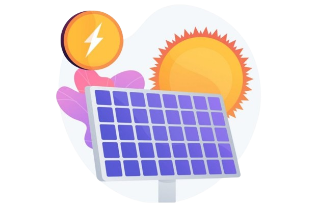

Voltar
Energia Solar e seus Benefícios
Os benefícios da energia solar são diversos e abrangem áreas como o meio ambiente, a economia e a sociedade. Aqui estão alguns dos principais benefícios:
Limpa e Renovável:
A energia solar é uma fonte de energia limpa e renovável, o que significa que sua geração não produz emissões de gases de efeito estufa nem poluentes atmosféricos, contribuindo assim para a redução da poluição do ar e dos impactos das mudanças climáticas.
Redução das Emissões de Carbono:
Ao substituir fontes de energia baseadas em combustíveis fósseis, como o carvão e o petróleo, a energia solar ajuda a reduzir as emissões de carbono, ajudando a mitigar os efeitos das mudanças climáticas e a promover um futuro mais sustentável.
Economia de Energia:
A instalação de sistemas de energia solar pode ajudar a reduzir os custos de energia a longo prazo, uma vez que a energia solar é uma fonte gratuita e abundante de energia. Isso pode resultar em economias significativas para consumidores e empresas ao longo do tempo.
Criação de Empregos:
A indústria solar é uma importante fonte de empregos, desde a fabricação e instalação de painéis solares até a manutenção e operação de usinas solares. O crescimento do setor solar cria oportunidades de emprego em diversas áreas e contribui para o desenvolvimento econômico local e regional.
Descentralização da Energia:
A energia solar pode ser gerada em uma escala descentralizada, o que significa que pode ser instalada em telhados residenciais, edifícios comerciais e espaços urbanos, reduzindo a dependência de grandes centrais elétricas e aumentando a resiliência da rede elétrica.

Esses são apenas alguns dos benefícios da energia solar, que desempenha um papel crucial na transição para uma economia de baixo carbono e na promoção de um futuro mais sustentável e inclusivo para todos.